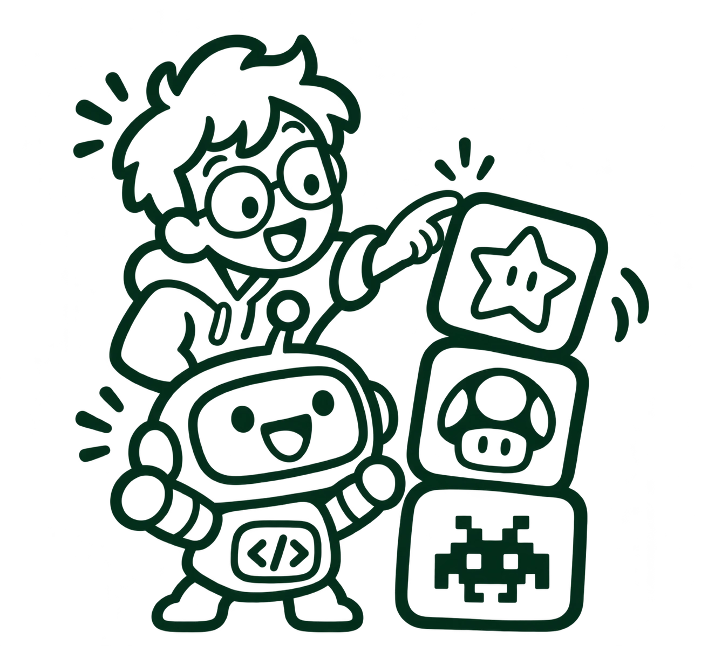
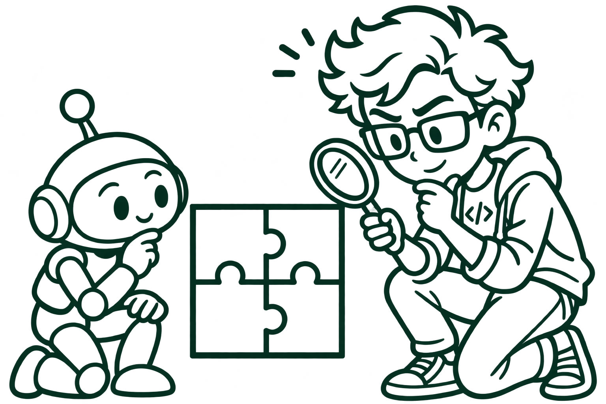
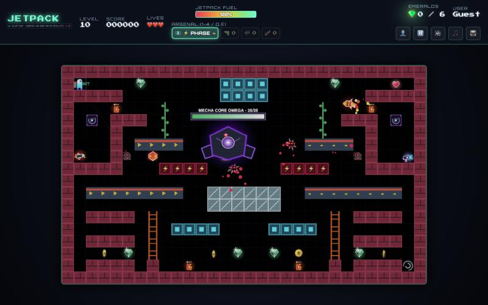
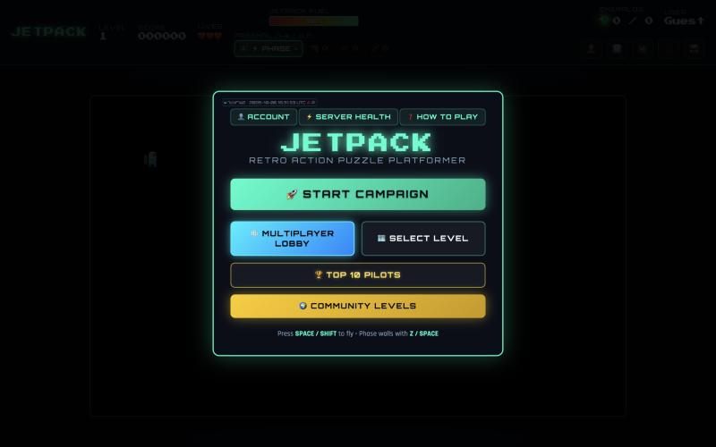
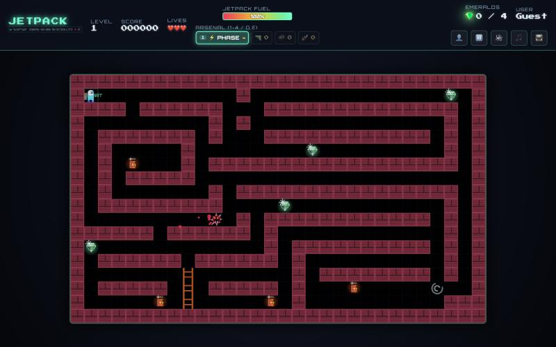
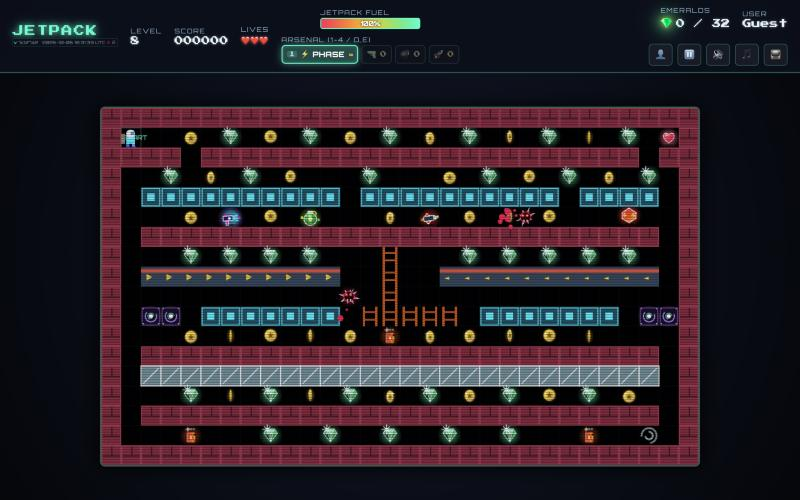

SEB
Lessons learned when building with AI for fun
Chess engines, games and what I learned.
SEB
Why these hobby projects?
- Take back the joy of developing, and build what I never could before
- Can a real app or game be built with AI?
- Do larger projects drift: scalability, stability, sloppiness?
- What level of supervision does the AI need?
- Become a better prompt programmer

SEB
Findings
- AI is better than I thought.
- Split tasks into sub-tasks for better results.
- Guide AI as much as possible, review and test.

SEB
About me
- Coding since the 80s, professional developer since 2001
- Former math & chemistry teacher
- Product companies, med tech, consulting
- SEB since 2024, developer in the HULT team
- Programming hobbyist, especially chess engines
SEB
Chess engines
- Goal: get ranked on CCRL at 2000 Elo
- ChessMatrix (by hand): Elo 1863, rank ~700
- ZeroG (with AI, summer 2026): Elo 2666, rank 398
- Every change gated: 400 games vs. previous version
SEB
Move generation
Every move opens a new position. Each of those has its own moves.
0 positions
| Depth | Positions |
|---|---|
| 1 | 20 |
| 2 | 400 |
| 3 | 8,902 |
| 4 | 197,281 |
| 5 | 4,865,609 |
| 6 | 119,060,324 |
SEB
Search and pruning
- Search ahead, assuming best play (minimax)
- Prune lines that can't matter (alpha‑beta)
- Evaluate the end positions
SEB
Smarter search, better evaluation
- Many more pruning techniques beyond alpha‑beta
- Null move: pass a turn. Still winning? Skip the line
- Late move reductions: search unlikely moves less deeply
- Futility pruning: skip quiet moves that can't catch up
- Evaluation: today a trained neural network (NNUE)
SEB
Let the AI read the profiler
- Speed matters: a faster search sees deeper and plays stronger
- Asked the AI to set up benchmarks and a profiler (macOS sample)
- One command: run the benchmark, sample where the time goes
- The AI read the output and found the bottlenecks itself
- Result: a much faster search, with little effort from me
SEB
Objective proof, not a feeling
- Elo comes from games played, not from opinions
- Every change had to win the 400-game gate, or it was rejected
- CCRL rates engines independently, against other engines
- Years by hand: 1863 Elo. One summer with AI: 2666 Elo
- Most AI gains are hard to measure. This one wasn't.
SEB
Jetpack
- A simple retro game I like to play myself
- Antigravity + Gemini 3.8, done in under a month
- Hardest part: making the jetpack turns feel natural
- Started in JavaScript, later converted to TypeScript
- Graphics and sound generated from prompts
- Free to play, ~60 players, open source on GitHub




SEB
Takeaways from Jetpack
- Long bug hunts make the code worse
- Ask the AI to clean up afterwards
- Clean code helps AI, just like it helps us
- AI is great at refactoring: fast, good changes, nothing breaks
- It set up its own code coverage, then used it to write missing tests
SEB
Terminal Depth
- The dream project. Jetpack was just a first test
- Can I rebuild a 90s game I loved, in a modern way?
- 3D first-person, six degrees of freedom
- New ground: 3D modelling and a real game engine
- Online multiplayer combat
Gameplay video
SEB
From concept art to 3D model
- ChatGPT: concept art for enemies, the ship, weapons, items
- Meshy.ai: turns each image into a 3D model
- Gemini, later Claude: imports the models into the game
- Blender: small manual fixes, fewer polygons for speed
SEB
Music, sound and engine
- Music: Gemini chat with its music plugin
- Sound effects: ElevenLabs
- Engine: Godot, with C# for the game logic
- Unlike Jetpack: many specialised AI tools, each for its own job
SEB
Terminal Depth in numbers
First commit 11 September, two months ago
| Category | Lines |
|---|---|
| C# game code | 54,509 |
| C# tests | 20,930 |
| Python (3D/texture pipeline, tools) | 20,839 |
| GDScript (headless checks, render scripts) | 17,795 |
| Shaders | 1,141 |
| Shell scripts | 88 |
| Total | ≈115,300 |
| Category | Count |
|---|---|
| Scenes | 97 |
| Sound effects | 78 |
| 3D models | 70 |
| Textures | 47 |
| Story voice lines | 15 |
| Enemy types | 11 |
| Rooms / chambers | 7 |
| Music tracks | 6 |
| Corridors / tunnels | 5 |
| Playable levels | 4 |
SEB
Rules, skills and tech debt
- AGENTS.md: one set of project rules for every AI agent
- Rules: 12 files, loaded only when the AI works in that area
- Skills: mostly Python scripts the AI built and saved, reused for similar complex work, e.g. the 3D pipeline, level assembly
- My own rules: propose new skills, point out tech debt, never commit, allow no warnings
- All other rules and skills: written by the AI, reviewed and accepted by me
- Tech debt: the AI reports it, but doesn't fix it unasked